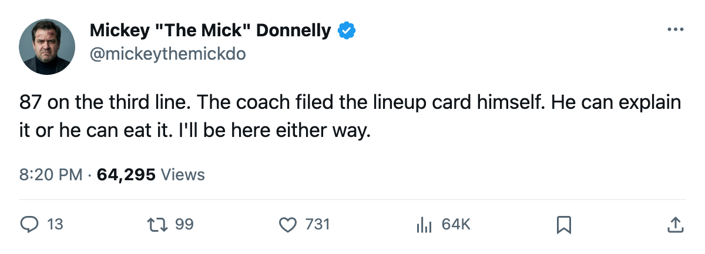
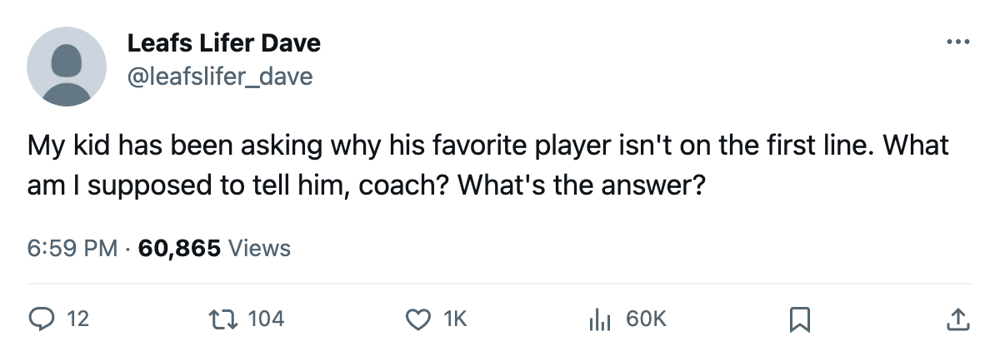

87 ON THE 3RD LINE: BOSTON'S COACH IS HIDING HIS BEST MAN
Sergei Samsonov centers the third line while a 79 plays first wing and a 77 plays second. The lineup card is the coach's confession.
 Mickey "The Mick" DonnellyColumnist, ex-goalie · The Penalty Box
Mickey "The Mick" DonnellyColumnist, ex-goalie · The Penalty Box
 Sergei Samsonov87 is rated 87 by the Bureau's Book. He centers the third line for
Sergei Samsonov87 is rated 87 by the Bureau's Book. He centers the third line for  Boston Bruins.
Boston Bruins.  Mike Knuble79 plays first-line left wing at 79. Ivan Huml77 plays second-line left wing at 77. The coach has his best forward eight and 10 points below the men skating ahead of him and won't explain why.
Mike Knuble79 plays first-line left wing at 79. Ivan Huml77 plays second-line left wing at 77. The coach has his best forward eight and 10 points below the men skating ahead of him and won't explain why.
Boston won its first game 4-2 on the road. The club hasn't played at home yet. Nobody in that building can point at 20 games of results and say the lines are producing. There's a coach, a lineup card, and a man rated 87 skating third-center minutes while two forwards rated 79 and 77 get the power play. Knuble is on P1. Huml is on P2. Samsonov is on S4. Fourth string. Whatever that is.
The Bureau's mis-slot table doesn't lie and neither does this one
The mis-slot listing from the Bureau flags every third- or fourth-liner rated above a top-six man at his position. Boston's entry is the widest gap in the league. An 87-rated forward, slotted L3C, sitting above a 79 and a 77 who play the top two lines. That's not a system. That's a coach who doesn't trust his own numbers.
The payroll sits at $60.32M. The building turned a $21.64M profit. They're paying for a forward the Book says is elite and then burying him on the third line while two men rated below him get the power-play time and the defensive-zone starts. I stopped rubber for years. I know what a coach looks like when he's hiding a player he doesn't want to admit is bad. He puts him somewhere he can't hurt you and hopes nobody reads the lineup card.
Samsonov isn't bad. He's 87. That's the problem. If he were 77, fine, bury him, I'd have no argument. But 87 means something to me and it should mean something to a coach who collects a paycheck to put the right nine men out there.
The room sees the card too
I don't have a Morale Scale reading on Samsonov personally. What I have is 13 years in locker rooms. A man rated 87 who watches a 79 take the opening faceoff knows exactly what that means. The room knows. The kid on the first line knows. And you expect that man to go to the wall for you in January when your legs are gone?
Boston plays at home soon enough. The coach can keep Samsonov on the third line for five games, ten games, twenty. The Bureau's Book doesn't change. 87 is 87. The lineup card is the coach's own document, his own handwriting, and every night he files it he's telling 87 people in that building that the number doesn't count.
Of course it counts. Of course the room sees it. Of course nothing happens to the man who wrote it.

